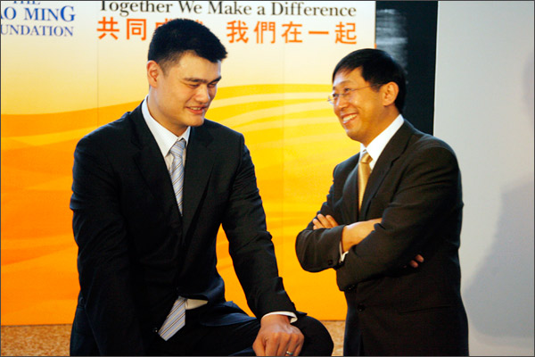
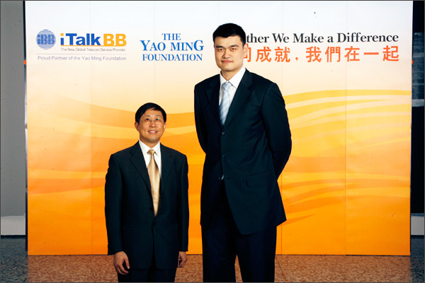

姚明及其基金會授予iTalkBB新電信＂傑出企業合作夥伴＂榮譽證書!
（休斯頓3月28日）

星光雲集、名流穿梭的姚明基金會慈善晚宴於3月28日在休斯頓藝術博物館舉行。休斯頓的社會上流、姚明的隊友休斯敦火箭隊的老闆、著名退役中鋒穆托姆博、現役中鋒斯科拉等、聞名全美的中餐大廚Ming Tsai以及格蘭美提名歌星Michael Cavanaugh都彙集在休斯頓藝術博物館，為iTalkBB新電信與姚明基金會合作2010慈善晚宴增添了一道亮麗的風景線。
慈善晚宴以中西合璧的佳肴呈現，由亞裔名廚Ming Tsai特別設計，姚明親自在宴會上向嘉賓展現了中國傳統名吃"北京烤鴨"的製作流程，讓到場嘉賓嘖嘖稱讚。通過一道菜，向眾人展示中國傳統文化的魅力，姚明的表現給嘉賓們留下了深刻的印象。尤其是晚宴獨家設計"與姚明一同體驗"的拍賣，包括姚明獨家提供與5個小孩子一塊進行籃球訓練，還有與休斯頓球星一道坐私人飛機到上海參加火箭隊的表演賽等。
"共同成就，我們在一起"，秉承iTalkBB新電信一貫"為海外華人提供更好的生活服務"的宗旨，與姚明基金會的攜手，進一步深化了雙方共同的理念。姚明在接受鳳凰衛視獨家採訪時表示："iTalkBB是全美非常有名的公司，在華人圈裡有很大的影響力。非常高興他們能給我們這麼大的幫助，實現今晚的慈善晚宴。通過這次成功舉辦籌款晚會，我們相互之間增進了信任和默契，我們會更加緊密的溝通和合作。" 同時姚明也表示，我們正在策劃針對美國和中國教育交流的新項目，希望能在未來的一段時間內幫助更多的中美學生，促進中美兩國的文化互滲。 姚明基金會為了感謝iTalkBB新電信一直以來對在美亞裔小區的貢獻以及對姚明基金會的支持和幫助，特別頒給iTalkBB新電信"最佳企業合作夥伴"(Outstanding Corporate Partner)榮譽證書。iTalkBB新電信CEO趙捷表示 "與姚明基金會的合作貫穿了iTalkBB回饋小區的責任，雙方在今後還會有更多的機會合作，為海外華人提供更多更好的服務。與姚明及其基金會的合作，iTalkBB新電信將堅持一直以來的企業文化，為海外華人小區貢獻自己的力量，同時盡自己的努力，促進中美文化的深入交流。"
姚明與iTalkBB CEO趙捷親切交流

姚明基金會主席Marc頒發"最佳企業合作夥伴"榮譽證書給iTalkBB CEO 趙捷
姚明與iTalkBB CEO趙捷晚宴合影留念
關於iTalkBB：
iTalkBB新電信是享譽全美的優秀通訊品牌，是國際電訊行業的領導和先驅。其以頂級全球網絡和前沿技術為依託，以最具競爭力的價格為客戶提供高質、清晰的本 地、國內及國際長途電話服務，以及高清中文電視直播、回播與點播服務。其電話業務能完全取代傳統家庭電話，並享受多重免費提供的附加功能如來電等待、三方通 話、來電顯示、呼叫轉移等。另有獨一無二的功能——中國大陸、台灣、香港、南韓當地號碼，當地親友只要撥打此號碼，就能接通到在美國的親友，而無需支付國際 長途費用 。iTalkBB的高清中文電視服務，自問世以來便受到了廣泛的好評和歡迎。超過五十個熱門頻道支持實時直播與48小時回看，海量最新電影電視劇綜藝節目免 費無限點播，讓用戶以最低價格盡享華語娛樂。iTalkBB新電信將不斷努力，與您共同成就更美好的生活。iTalkBB設有24小時中英文的客戶服務熱線: 1-877-482- 5522和官方網站www.iTalkBB.com，一年365天提供不間斷的服務與更多信息的查詢。